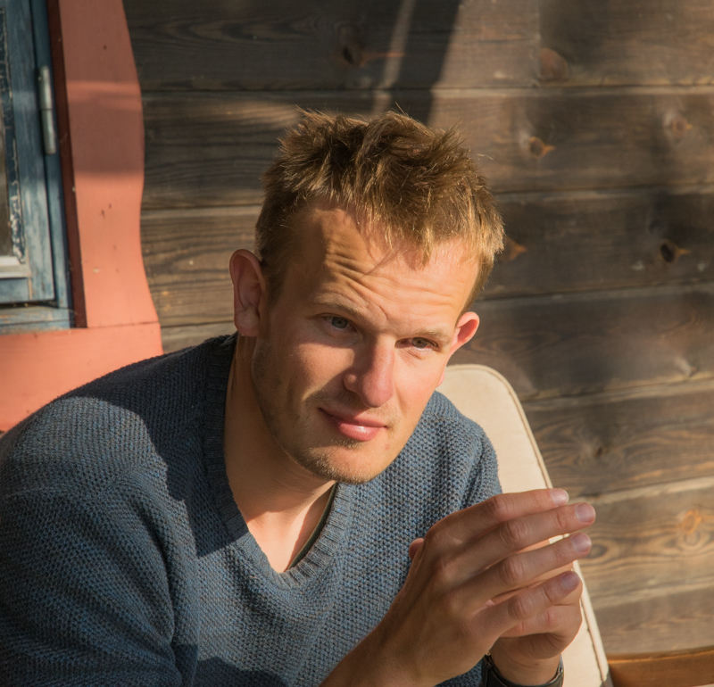

Momme C. Hell
mhell @ brown.edu
mhell @ brown.edu
Twitter: @mhell
Postdoctoral Scholar at DEEPS,
Brown University,
Providence, RI
About
I am currently a PostDoc at the Department for Earth, Environmental and Planetary Sciences at Brown Univeristy Chris Horvat and Baylor Fox-Kemper and was a postdoc with Nick Lutsko at Scripps Institution of Oceanography (SIO).I graduated from SIO in November 2020 in Physical Oceanography with my advisors Arthur "Art" Miller, Sarah Gille, and Bruce Cornuelle. Before that I studied at GEOMAR in Kiel (2009-2012) and ETH Zurich (2013-2015) Atmosphere, Ocean, and Climate (short CV).
My research interest are:
• Stochastic air-sea fluxes
• Open-ocean surface waves
• Sea ice-wave coupling
• Ocean remote sensing observations
• Climate dynamics and weather extremes
I have a graphic design and typography background and implement these rules for scientific graphics and visualization in my publications an science journals.